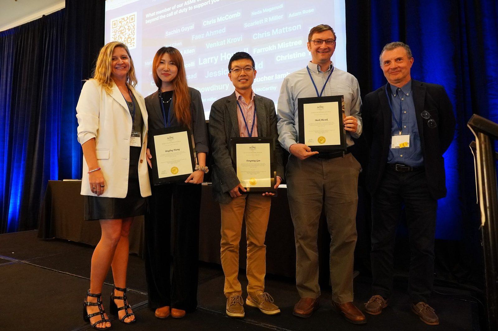
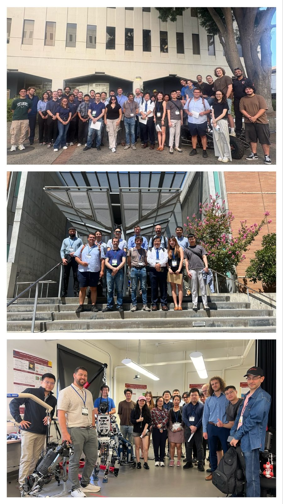
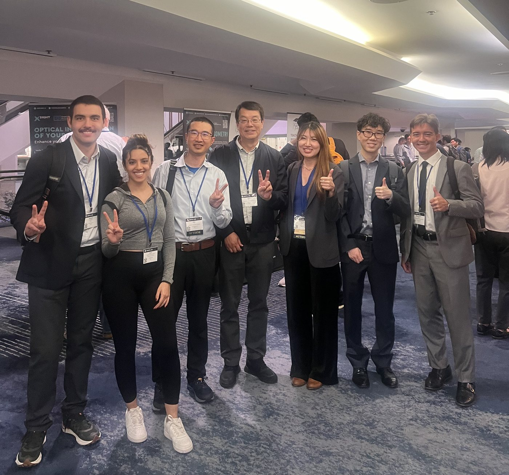

News
Invited talk at the CSU AI Tech Campus Showcase
Dr. Huang was invited to present her research, “Reinforcement Learning-empowered Multi-Robot Teamwork for Smart Manufacturing,” at the CSU AI Tech Campus Showcase in July.
CSU Chancellor's Early-Career Faculty Fellowship
Dr. Huang was awarded the 2026 CSU Chancellor's Early-Career Faculty Fellowship. As part of the fellowship, she will visit the NSF and NIH in Washington, D.C., on August 11–13.
Honda Corporate Programmatic Funding awarded
The lab received 2026 Honda Corporate Programmatic Funding from American Honda Motor Co., Inc., with Dr. Huang as Principal Investigator, for the project “Building Trust in Human–AI Robotics Teaming for the Future Manufacturing Workforce.” The project aims to prepare future engineers to understand, evaluate, and design trustworthy human–AI collaboration in manufacturing environments.
Two papers accepted to ASME IDETC-CIE 2026
Lab work on social-information representation in multi-agent reinforcement learning and self-organizing warehouse coordination was accepted to IDETC-CIE 2026 in Houston.
ASME Advancing Engineering Profession Service Award
Dr. Huang received the 2025 ASME Advancing Engineering Profession Service Award, recognizing her service to the engineering community.

Local lab tours for IDETC-CIE 2025
As Local Chair and a General Conference Committee member, Dr. Huang organized and hosted local lab tours at USC, UC Riverside, and CSUF for more than 30 visiting researchers. Sincere thanks to the host universities and labs for their generous support.
USC — Department Chair Dr. Paul Ronney and Dr. Yan Jin; the Wind & Water Tunnel Lab (Dr. Geoffrey Spedding); the Dynamic Robotics and Control Lab (Dr. Quan Nguyen), hosted by Dr. Junheng Li and Junchao Ma; and the Baum Family Maker Space (Dr. Weber and Dr. Staelens). UC Riverside — the ME Instruction Lab and campus tour (Dr. Yuanhang Zhu) and the Robotics Lab (Dr. Mingyu Cai). CSUF — the campus tour (Dr. Xinyi Wang), Robotics Lab (Dr. Nina Robson), TAM Lab (Dr. Sagil James), and Materials Lab (Dr. Siheng Su), together with the CSUF Legacy Teams.

Lab presents at ASME IDETC-CIE 2025, Anaheim
Dr. Huang and her student Max Haaga presented work on emergent role specialization and communication-free multi-agent training.
